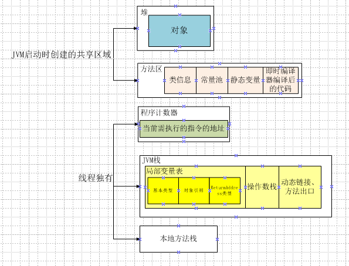
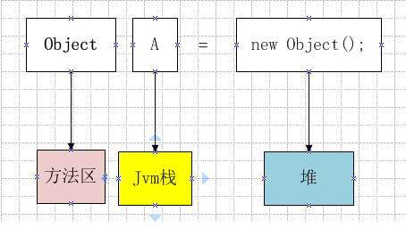
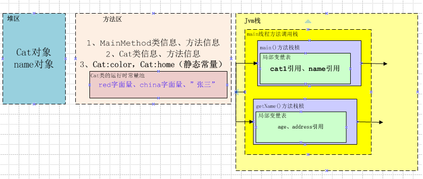

JVM内存分配
JDK和JRE
JDK（Java Development Kit）：java开发软件工具包，用java做开发时必须使用JDK
JRE（Java Runtime Environment）：java最小运行时环境，运行一个已编译好的java程序时需要用到JRE
JDK包括：java语言、JVM、javaApi（jdbc、javadoc、javac、String、IO等等）
JRE包括：JVM、javaApi中的一部分（不包括javac、javadoc等编译、调试工具）
JVM内存划分
我们运行的每个类和线程都有很多信息需存储在JVM中，比如常量、对象、类信息等，JVM为这些信息分配了不同的内存区域。就像商品会归类存放到对应的货仓，生鲜仓、干货仓等等。
JVM规范将内存区域划分情况如下图：

如何配置各个内存区域的大小
堆
-Xms最小值，-Xmx最大值，-Xmn新生代大小。-XX:SurvivorRatio=8表示
方法区
-XX:PermSize最小值，-XX:MaxPermSize最大值
栈
-Xss每个线程的栈大小
用例子来讲解
例子A
这一行代码的存储情况，如下

操作数栈：计算时，存储计算过程的临时存储区域
常量池存放最多的是常量值和符号引用，符号引用：类和接口的全限定名；字段的名称和描述符；方法和名称和描述符
例子B
按照main方法执行的过程，讲述JVM内存区域的情况，下面是代码
1、Cat
2、main方法类
代码存储情况如下

Comments